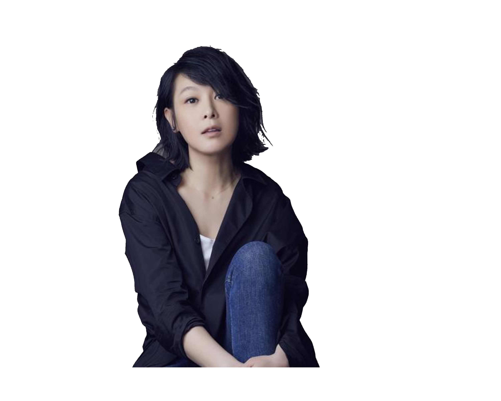

EXPLORE THE MOST POPULAR MUSICIAN WITHIN YOUR GENERATION

Rene Liu Ruo-ying is a Taiwanese singer-songwriter, actress, director and writer. Her music often focuses on love stories and has built an image around herself as a single woman. She has released 20 albums since 1995 and held hundreds of solo concerts worldwide.
Fei's career began in 1973, and he began to build a large fan base along with his brother. He performed several theme songs for television shows, some of which were more successful than the shows themselves. He has sung numerous hits such as "Yi Jian Mei" (A Trim of Plum Blossoms).
Wakin Chau, better known by his stage name Emil Chau during the 1980s and 1990s, is a Hong Kong-born Taiwanese singer, songwriter and actor, popular throughout Taiwan, Hong Kong, Mainland China, and parts of Southeast Asia. As of August 2007, he has released more than 40 albums.